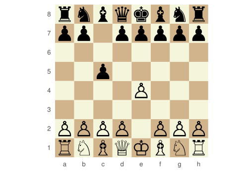

A long time ago I wonder for some R package for chess. Python, JS, Java, C have chess libraries, why R not? But then the htmlwidgets and V8 packages were born and now possibilities are almost endless. Anyone can make a wrapper for a JS library :D. And this is how rchess came out.
The rchess package is a chess move, generation, validator; piece placement, movement, and check/checkmate/stalemate detection. All this powered by V8 package and chessjs javascript library.
The main parts about this package are:
- V8 package and chessjs javascript library. So this is not about performance but have the things done (just like Just @hrbrmstr saids).
- R6 package for the OO system.
- htmlwidgets package and chessboardjs javascript library.
Now let’s take a look what this package can do.
WHOA chessboardjs have a nice look. Right?
The basic usage is the same as the chessjs api. I’m just implemented only the calls to this api. Anyway, to see the possibles moves you can use the moves method and if you make a move use the move function.
Code
chss$moves() [1] "a3" "a4" "b3" "b4" "c3" "c4" "d3" "d4" "e3" "e4" "f3" "f4"
[13] "g3" "g4" "h3" "h4" "Na3" "Nc3" "Nf3" "Nh3"Code
chss$moves(verbose = TRUE)# A tibble: 20 × 6
color from to flags piece san
<chr> <chr> <chr> <chr> <chr> <chr>
1 w a2 a3 n p a3
2 w a2 a4 b p a4
3 w b2 b3 n p b3
4 w b2 b4 b p b4
5 w c2 c3 n p c3
6 w c2 c4 b p c4
7 w d2 d3 n p d3
8 w d2 d4 b p d4
9 w e2 e3 n p e3
10 w e2 e4 b p e4
11 w f2 f3 n p f3
12 w f2 f4 b p f4
13 w g2 g3 n p g3
14 w g2 g4 b p g4
15 w h2 h3 n p h3
16 w h2 h4 b p h4
17 w b1 a3 n n Na3
18 w b1 c3 n n Nc3
19 w g1 f3 n n Nf3
20 w g1 h3 n n Nh3 Code
chss$move("a3")We can also concate moves, see who plays in the next turn, see the history, etc.:
Code
chss$move("e5")$move("f4")$move("Qe7")$move("fxe5")
plot(chss)Code
chss$turn()[1] "b"Code
chss$history(verbose = TRUE)# A tibble: 5 × 8
color from to flags piece san captured number_move
<chr> <chr> <chr> <chr> <chr> <chr> <chr> <int>
1 w a2 a3 n p a3 <NA> 1
2 b e7 e5 b p e5 <NA> 2
3 w f2 f4 b p f4 <NA> 3
4 b d8 e7 n q Qe7 <NA> 4
5 w f4 e5 c p fxe5 p 5Code
chss$history()[1] "a3" "e5" "f4" "Qe7" "fxe5"A must have funcionality is load games from PGN and FEN notations:
Code
chssfen <- Chess$new()
fen <- "rnbqkbnr/pp1ppppp/8/2p5/4P3/8/PPPP1PPP/RNBQKBNR w KQkq c6 0 2"
chssfen$load(fen)[1] TRUE(Shh you can also plot the chesboard with ggplot. I know I need change that unicode style pieces ;) ).
Code
plot(chssfen, type = "ggplot")
Now load PGN string:
Code
pgn <- system.file("extdata/pgn/kasparov_vs_topalov.pgn", package = "rchess")
pgn <- readLines(pgn, warn = FALSE)
pgn <- paste(pgn, collapse = "\n")
chsspgn <- Chess$new()
chsspgn$load_pgn(pgn)[1] TRUECode
cat(chsspgn$pgn())[Event "Hoogovens A Tournament"]
[Site "Wijk aan Zee NED"]
[Date "1999.01.20"]
[EventDate "?"]
[Round "4"]
[Result "1-0"]
[White "Garry Kasparov"]
[Black "Veselin Topalov"]
[ECO "B06"]
[WhiteElo "2812"]
[BlackElo "2700"]
[PlyCount "87"]
1. e4 d6 2. d4 Nf6 3. Nc3 g6 4. Be3 Bg7 5. Qd2 c6 6. f3 b5
7. Nge2 Nbd7 8. Bh6 Bxh6 9. Qxh6 Bb7 10. a3 e5 11. O-O-O Qe7
12. Kb1 a6 13. Nc1 O-O-O 14. Nb3 exd4 15. Rxd4 c5 16. Rd1 Nb6
17. g3 Kb8 18. Na5 Ba8 19. Bh3 d5 20. Qf4+ Ka7 21. Rhe1 d4
22. Nd5 Nbxd5 23. exd5 Qd6 24. Rxd4 cxd4 25. Re7+ Kb6
26. Qxd4+ Kxa5 27. b4+ Ka4 28. Qc3 Qxd5 29. Ra7 Bb7
30. Rxb7 Qc4 31. Qxf6 Kxa3 32. Qxa6+ Kxb4 33. c3+ Kxc3
34. Qa1+ Kd2 35. Qb2+ Kd1 36. Bf1 Rd2 37. Rd7 Rxd7
38. Bxc4 bxc4 39. Qxh8 Rd3 40. Qa8 c3 41. Qa4+ Ke1 42. f4 f5
43. Kc1 Rd2 44. Qa7 1-0Code
head(chsspgn$history(verbose = TRUE), 20)# A tibble: 20 × 8
color from to flags piece san captured number_move
<chr> <chr> <chr> <chr> <chr> <chr> <chr> <int>
1 w e2 e4 b p e4 <NA> 1
2 b d7 d6 n p d6 <NA> 2
3 w d2 d4 b p d4 <NA> 3
4 b g8 f6 n n Nf6 <NA> 4
5 w b1 c3 n n Nc3 <NA> 5
6 b g7 g6 n p g6 <NA> 6
7 w c1 e3 n b Be3 <NA> 7
8 b f8 g7 n b Bg7 <NA> 8
9 w d1 d2 n q Qd2 <NA> 9
10 b c7 c6 n p c6 <NA> 10
11 w f2 f3 n p f3 <NA> 11
12 b b7 b5 b p b5 <NA> 12
13 w g1 e2 n n Nge2 <NA> 13
14 b b8 d7 n n Nbd7 <NA> 14
15 w e3 h6 n b Bh6 <NA> 15
16 b g7 h6 c b Bxh6 b 16
17 w d2 h6 c q Qxh6 b 17
18 b c8 b7 n b Bb7 <NA> 18
19 w a2 a3 n p a3 <NA> 19
20 b e7 e5 b p e5 <NA> 20Code
plot(chsspgn)And that’s it. If you want to check more funcionalities check the github repository or this document.
Bye mate!
Reuse
Citation
BibTeX citation:
@online{kunstfuentes2015,
author = {Joshua Kunst Fuentes},
title = {Rchess a {Chess} {Package} for {R}},
date = {2015-10-07},
url = {https://jkunst.com/blog/posts/2015-10-07-rchess-a-chess-package-for-r},
langid = {en}
}
For attribution, please cite this work as:
Joshua Kunst Fuentes. 2015. “Rchess a Chess Package for R.”
October 7, 2015. https://jkunst.com/blog/posts/2015-10-07-rchess-a-chess-package-for-r.